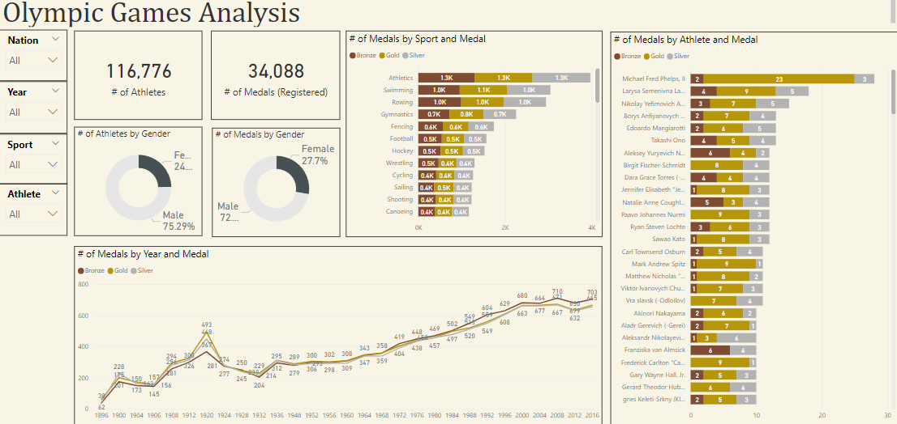
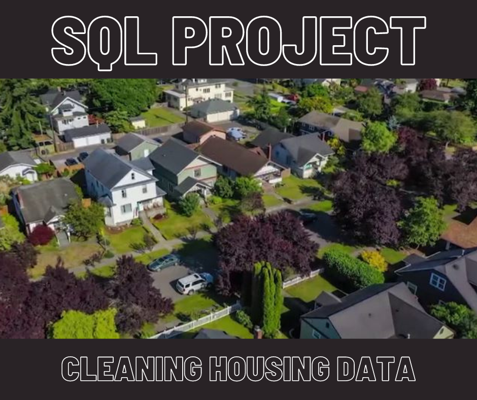

3 March, 2023
I loved building this Power BI project; I used historic Olympic data starting in 1896 to create a lovely dashboard with colour-coding to match the Olympic medal levels. I cleaned and prepared the data in SQL Server, imported it into PowerBI, and created the dashboard using donut charts, bar charts, line charts and KPI's.
Then, I got a bit more curious about the data and explored what the data can tell us about Ireland and women's boxing. You might find the results as interesting as I did!


In this project I cleaned
housing data using SQL Server. I standardised discrepant data, divided joined data into more manageable columns, removed duplicates,
and populated missing data based on context clues.

This publication was part of the Q3 Employment Monitor report for which I gathered, analysed, and presented data.
I interviewed subject matter experts, conducted a qualitative analysis of unstructured data,
and analysed quantitative data which fed into a larger report which was released to news oulets.
The original report was 9,000 words long with key bullet points highlighted for the media.
RTE News, the Irish Examiner, Silicon Republic, and theCork.ie all picked up the data story.
Key to this project was stakeholder management and liaising with senior leadership.
outlets. During my time project managing the employment monitor,
the report received publication in over 12 news outlets, an over 30% increase from the last two years.

In this project I analysed longitudinal survey data and statistics to test a hypothesis based on psychological theory. Results were non-significant and recommendations are discussed.

In this project I created a colourful and dynamic Tableau dashboard to display relationships between variables in a Canadian sales dataset. In the top left I created a multivariate interactive chart which details the relationships between order quantity, ship mode, and province location.
Another multivariate chart on the bottom right shows the relationships between customer segment, profit, and product category.

In this project I used the R programming language to test a hypothesis using linear regression with a medical dataset.